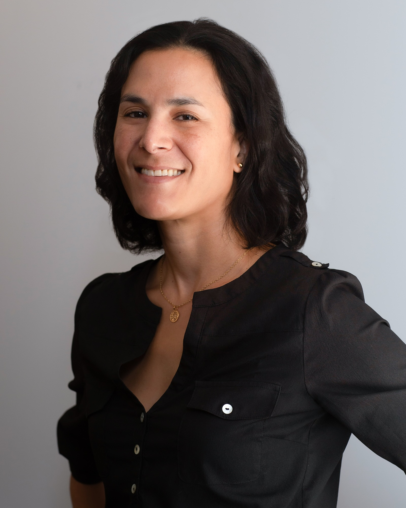

Journalist · Editor · Investigative Reporter
Two decades reporting at the intersection of power, accountability, and technology — from Baghdad to Brussels, Kyiv to Los Angeles.
About

I'm a journalist and editor with more than two decades of experience across investigative reporting, national security, criminal justice, technology, and ideas-driven narrative journalism. I've broken stories that triggered new legislation, prompted congressional hearings, and secured the freedom of people wrongly imprisoned.
As Deputy Editor at Noema Magazine, I shape complex essays and deeply reported features by writers across the globe — work that has earned anthology selections, book deals with major publishers, and briefings before U.S. House Select Committee staff.
I served as the first cybersecurity reporter at The Associated Press, covering election security, the Apple encryption showdown, ransomware, and the internet of things before those beats were mainstream. I've reported on the ground in Iraq, Ukraine, and across Europe, Southeast Asia, and the Pacific.
When I'm not at a desk, you'll find me on a rock face, on a mountain, or somewhere remote with a map and too much gear.
Experience
Edit and commission complex narrative essays and deeply reported features from writers around the globe, across technology, science, philosophy, AI, and global politics. Developed Noema's first-ever editorial AI policy — praised externally as an industry-leading model — and spearheaded the publication's adoption of audio.
Covered the criminal justice system with a focus on systemic disparities and inequities. Traveled to Ukraine to cover the fallout of Russia's February 2022 invasion. Helped cover investigations into Donald Trump and Jan. 6 Committee findings.
On the launch team of a technology journalism startup covering the L.A. tech ecosystem. Reported on diversity and equity in venture capital funding and broke a five-part exclusive narrative investigation into a failed U.S. cannabis fund backed by a Russian oligarch.
Served as the first AP cybersecurity reporter — covering election security, the 2016 presidential campaign, the government-Apple encryption standoff, ransomware, IoT threats, and national security. Also reported on FEMA's failures in post-hurricane Puerto Rico.
Covered the LAPD, LA County Sheriff's Department, FBI, DHS, ATF, and DEA from the AP's Los Angeles bureau. Won multiple AP "Best of the States" prizes for breaking news.
Multiplatform reporter for L.A.'s NPR affiliate. Created and branded the Pass/Fail education blog. Broke multiple exclusive stories on LAUSD failures; increased web traffic nearly 400% in the first month of reporting.
Covered criminal justice, law enforcement, environment, government, and breaking news. Reported on nearly every major California fire, earthquake, or flood during the period.
Researched, documented, and monitored progress on more than 1,000 grants under USAID's $200M Iraq Rapid Assistance Program. Created regular reports for the State Department and USAID on reconstruction progress.
Selected Work
Expertise
International
My journalism has taken me across four continents — embedded with USAID reconstruction efforts in Baghdad, on the ground in Ukraine covering Russia's 2022 invasion, and freelancing across Southeast Asia and the Pacific.
This experience informs everything I edit and report: a practical understanding of conflict, reconstruction, and the human cost of institutional failure — alongside an instinct for the story underneath the story.
I studied at La Sorbonne in Paris and worked in the Wall Street Journal's Paris and Brussels bureaus early in my career, giving me a European lens I've carried ever since.
Recognition
Service & Community
Contact
Available for editing projects, writing assignments, speaking engagements, and editorial consulting. Reach out via email or connect on LinkedIn.